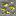

Mena de azufre
Dónde cavar
El corte se dibuja a partir de los propios números de generación del mineral: cuantos más bloques de mineral seguidos, mayor es la probabilidad a esa profundidad.

mineral en la paredResumen
El azufre es un no metal extraíble de early game usado para vulcanizar caucho. Su mena aparece en piedra y pizarra profunda, requiere un pico de piedra o mejor, y deja caer azufre bruto. El Triturador convierte un bloque de mena o un azufre bruto en dos polvos; un horno normal da un polvo sin duplicación.
Miniejemplo: encuentra mena de azufre entre Y −32 y 32, extrae el azufre bruto y tritúralo. Un azufre bruto da dos polvos — la mitad del lote de una sola operación del Vulcanizador.
El azufre no tiene forma de lingote: es un no metal, y el polvo es su forma tecnológica final aquí.
| Forma | Cómo lo consigues |
|---|---|
| Mena (piedra / pizarra profunda) | extráela en el mundo; un pico deja caer azufre bruto, Toque de seda da el bloque |
| Azufre bruto | la caída normal de la mena |
| Polvo | triturar mena o azufre bruto ×2; fundir azufre bruto ×1 |
Dónde encontrarlo
Las venas de azufre aparecen en el Overworld entre Y −32 y 32, con la mayor concentración cerca del punto medio del rango. El azufre es más raro que el estaño pero más común que la plata: sostiene la cadena del caucho temprana sin convertirse ni en cuello de botella ni en excedente innecesario.
Propiedades del bloque
La mena de azufre se comporta como una mena vanilla: necesita el pico correcto, Fortuna aumenta la caída, y Toque de seda da el bloque mismo.
| Campo | Valor |
|---|---|
| Herramienta | pico de piedra o mejor |
| Caída | raw_sulfur ×1; Fortuna multiplica, Toque de seda → bloque |
| Dureza | 3.0 en piedra, 4.5 en pizarra profunda |
Recetas (procesamiento)
Triturador: mena de azufre, mena de azufre de pizarra profunda o azufre bruto → 2 polvos de azufre por 300 EU/FE. Horno: azufre bruto → 1 polvo de azufre en los 200 ticks estándar, con 0.7 XP. Vulcanizador: se consumen cuatro polvos de azufre con un caucho en bruto; el calor cambia la producción de caucho, no el consumo de azufre.
La Columna de destilación no produce azufre. La mena es la única fuente primaria, y sulfur_dust queda deliberadamente excluido de las recetas de duplicación de la Incubadora.
Progresión
El azufre está disponible antes de MV y rompe el bloqueo circular donde el caucho sería necesario para alcanzar la máquina que produce azufre. Un horno ofrece una ruta sin máquinas, pero solo el Triturador duplica el recurso extraído. El azufre es la entrada más cara de la cadena del caucho, y el calor del Vulcanizador es lo que lo salva: una tanda típica de 16 cables aislados cuesta 8 caucho, que son 32, 16 o 12 polvos con salida ×1, ×2 o ×3 — casi tres horas de minería entre una hoguera y un Calentador eléctrico.
Relacionado
Caucho — el material producido por la vulcanización. Triturador — duplica la producción de polvo de azufre. Petróleo — la fuente primaria del caucho en bruto a través del Polimerizador.